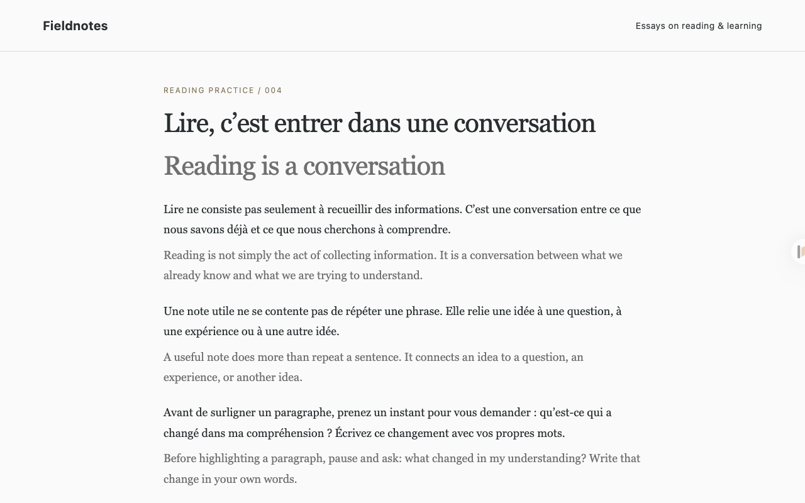
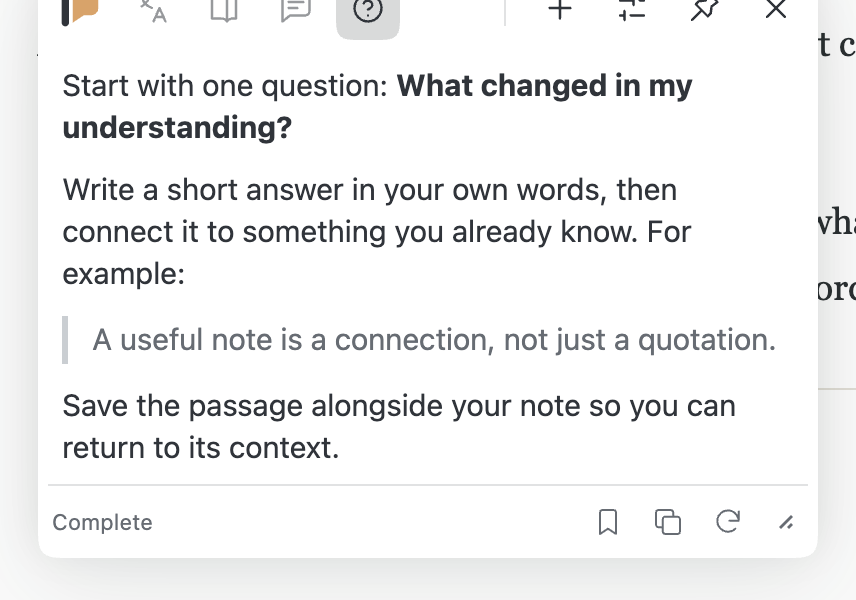
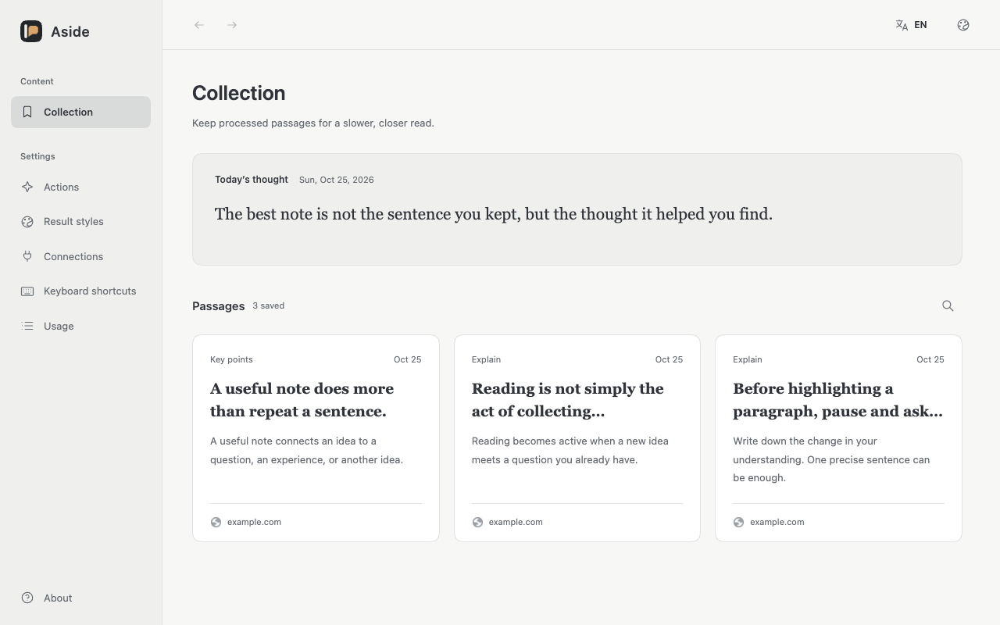
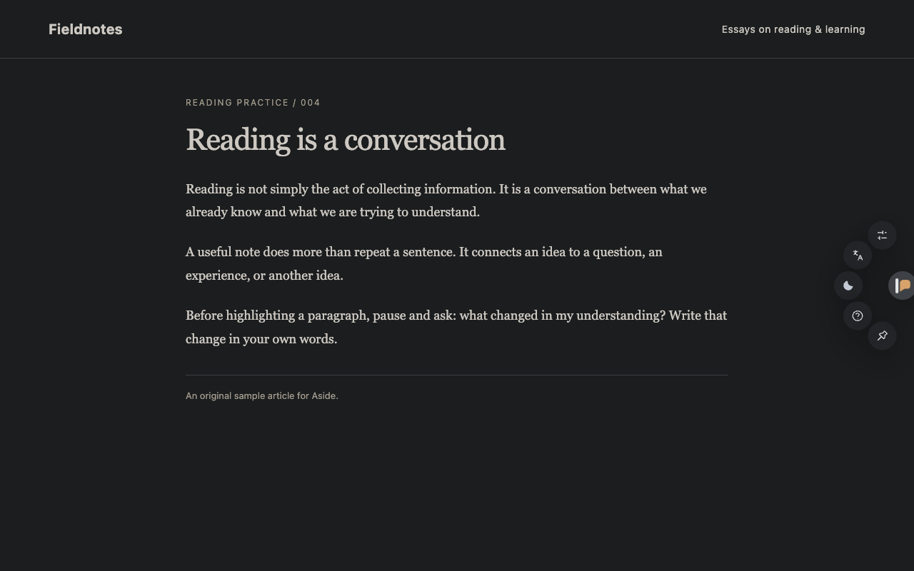

AI reading assistant · Open-source Chrome extension
Read with clarity. Think more deeply.
Use AI to translate pages, explain difficult passages, pull out key points, and answer questions about what you’re reading. Translations stay beside the original, so you can keep reading without switching to a separate chat window.
For Chrome 120+. No sign-up, free to use. Connect to your choice of cloud or local models (model services may charge fees).

Two languages. One page.
Read the translation without losing the original.
Read in context.
Translations sit below the original paragraphs, so both languages stay in view.
Keep scrolling.
Translate the visible area first. More passages are processed as you scroll or the page changes.
Return to the original.
Restore the page whenever you want. Your place in the text stays familiar.


Ask without leaving the page.
Select a passage to translate or explain it in a floating panel. Ask a follow-up question with Quick Q&A, using the selection or the page as context.
Clear the quote when you want to ask something on its own.
Alt + Q opens Quick Q&A
Keep more than a highlight.
Save a useful result with the original text and its source. Search your collection, revisit a passage, and pick up the thought again.
Today’s thought offers a short daily reflection, optionally inspired by your collection.


Lights out. Keep going.
A built-in Dark Reader engine brings dark mode to websites for reading in dim light. Enable it per site, or follow your system.
Adjust result colors, type size, and spacing to suit the way you read.


Make it your reading tool.
Create your own reading actions.
Explain a concept, interpret a classical text, or extract the key points. Add optional requirements to built-in actions, or create and try an action of your own.
Choose your language.
Choose from 15 interface languages. Set the output language separately for each action.
Keep your reference close.
Use Alt + W to switch between the last two tabs in your window. On macOS, use Option. Customize shortcuts in Chrome.
Your choice of model.
Connect a service you already use with its endpoint and API key. Aside supports these interfaces:
- OpenAI Responses
- OpenAI-compatible Chat Completions
- Anthropic Messages
- Gemini Interactions
Compatible local model endpoints on localhost are supported too.
A direct connection.
Requests go directly to your configured service. Aside has no account to create, no relay server, and no analytics. Settings, keys, collections, and request history are kept in your browser.
Read the privacy policyA few things to know.
Is Aside free?
Aside is free and open source under the MIT license. AI features require your own model access. Your provider may charge for requests; no model subscription or API credit is included.
Which models can I use?
Choose a provider that supports one of the four interfaces listed above. In Model connections, enter its service address and API key, test the connection, then select a model. You can keep multiple connections and choose one for each action.
Can I use a local model?
Yes, with a local service that exposes a compatible API, such as Ollama. Select OpenAI-compatible Chat Completions and use its localhost address. The service and model must support the requests you use. Local HTTP connections are limited to localhost, 127.0.0.1, or [::1].
Where does my reading data go?
Translation and other AI features send the required content directly to your chosen model service. Once page translation is started, scrolling can send more passages. With a model configured, Today’s thought can generate on the first Collection visit each day and optionally reference saved passages; hide it to stop automatic generation. The provider’s own data policy applies. Read the privacy policy
Start with a page worth reading.
Download the ready-to-load extension. No Node.js or build tools needed.
-
Download.
Get the extension ZIP using the button below. Choose the packaged extension, not GitHub’s “Source code” download.
-
Unzip.
Extract the ZIP into a folder you will keep. Chrome loads the extension from that folder.
-
Load in Chrome.
Open
chrome://extensions, enable Developer mode, choose Load unpacked, and select the extracted folder.
Then open Aside’s Settings and add a model connection. Return to a regular web page to start translating or asking questions.
Chrome Web Store review is in progress. Until then, install the packaged version above.